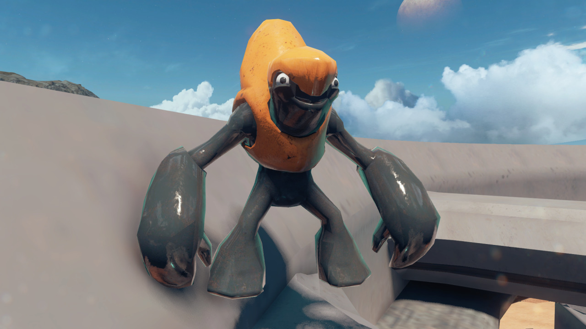
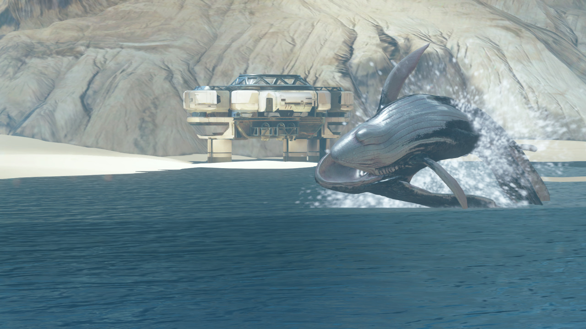

Riptide Easter Eggs!
So riptide actually has a few easter eggs in and out of the map. Firstly you have 4 grunts placed mainly outside of the map that look insanely happy, then you have a box them resembles the box used to summon Mr. Meeseeks in Rick and Morty (god help us all if this becomes a useable item)
Outside of the map you will find some deck chairs, from there you can sit down and enjoy the view as pelicans do an awesome fly by across the water and then above you and to finish it off one of those “space whales” jumping out of the water.
Ps. These are what grunts look like when they’ve had to much food nipple.